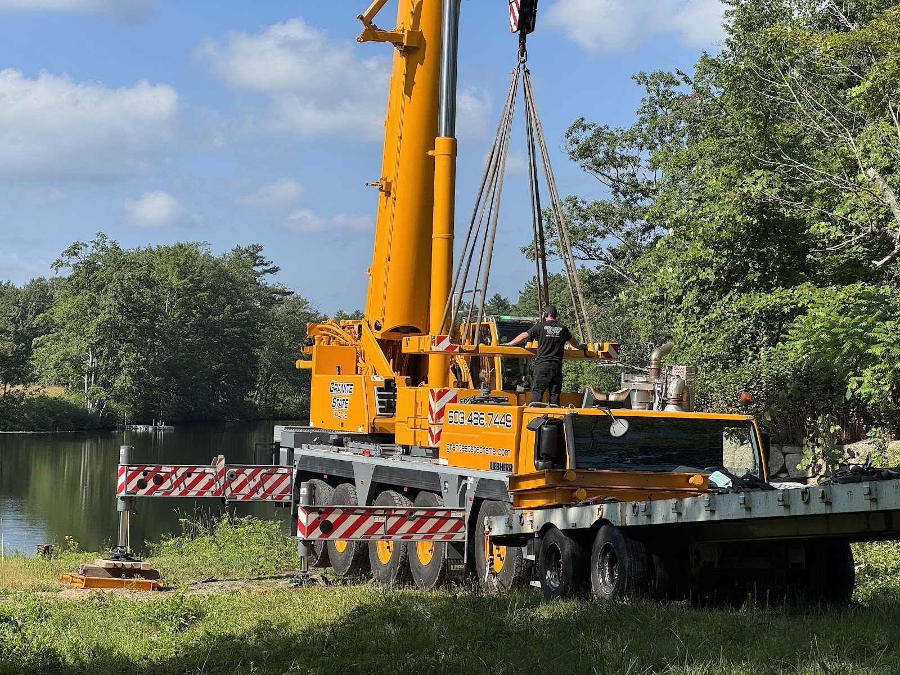
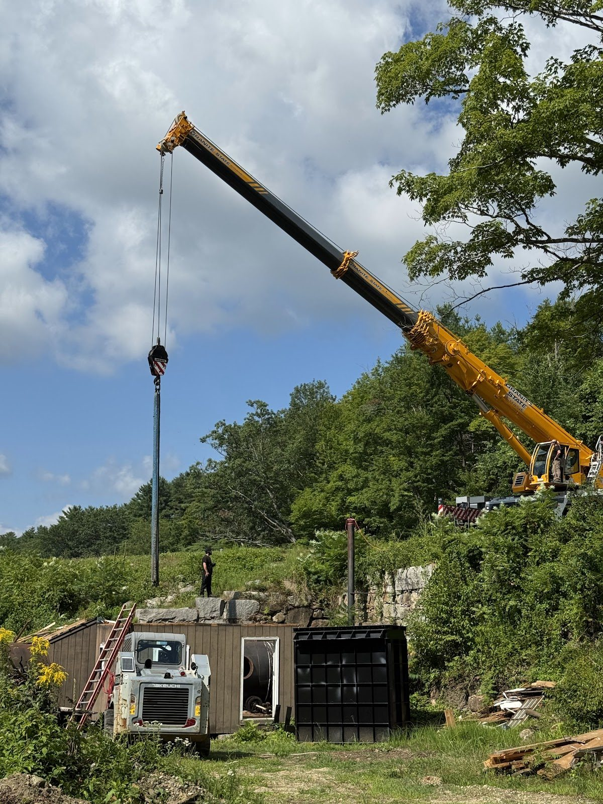
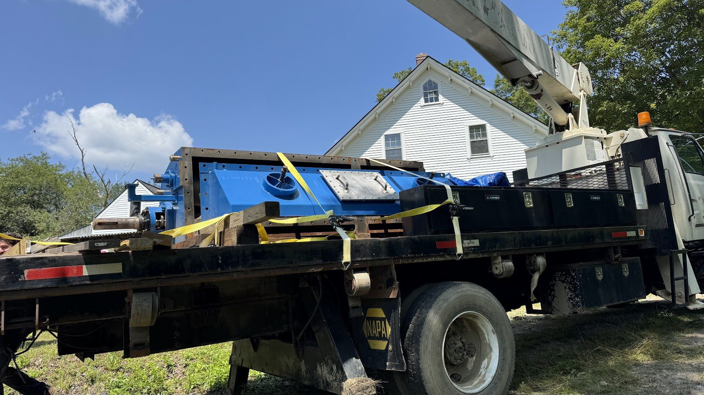
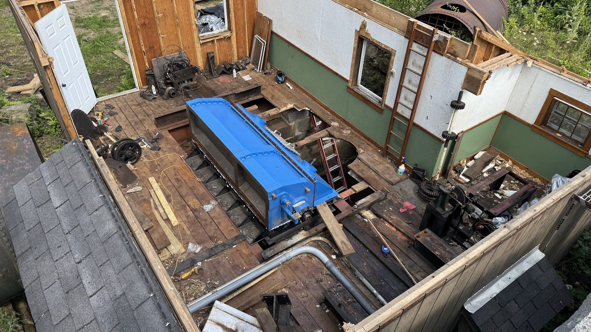
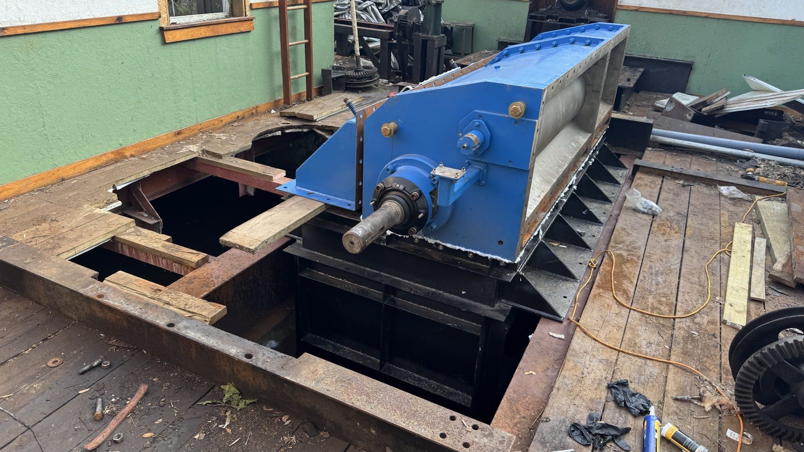
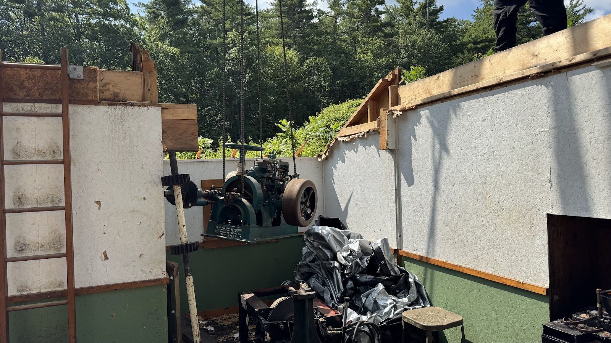
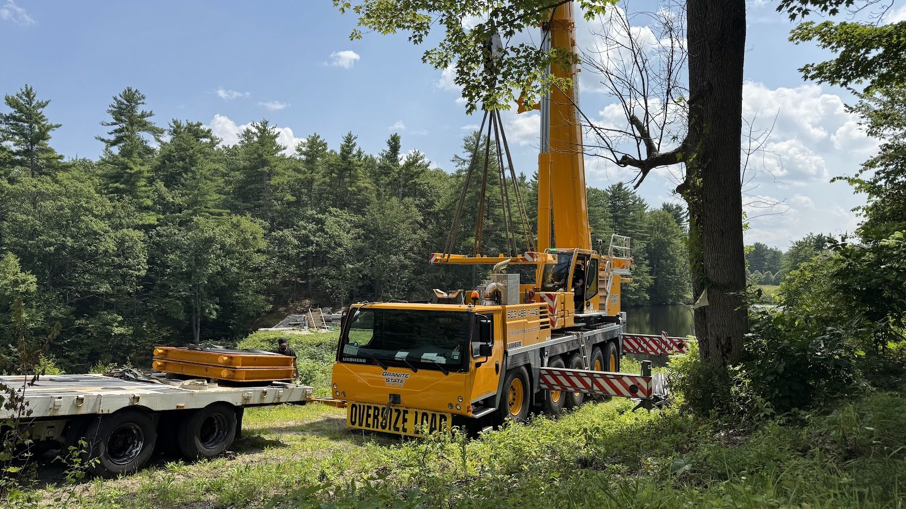
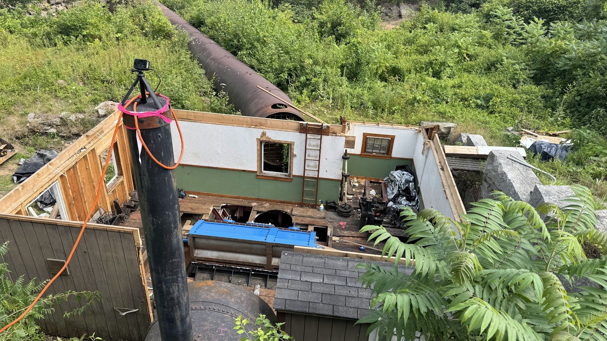

Crane Day

Some project days are just another day. July 28th was not one of those.
Crane day. The biggest lifts of the entire restoration, compressed into one carefully choreographed operation. By the time the crane folded up its outriggers, the old turbine — after decades in its pit — was out and resting on dry land, and the new draft tube and crossflow turbine were sitting in their permanent home in the water passages.









An operation like this is months of planning for hours of execution. Every lift was engineered in advance: pick weights, rigging arrangements, boom radius over the dam, ground bearing under the outrigger mats on a sloped site. The margin for improvisation when you're swinging tons of steel over a 150-year-old stone structure is zero.
Watching the old turbine come up was the emotional high point of the project so far. This machine ran for generations. It earned its retirement, and it came out whole — not cut apart — which felt like the right way to treat it.
And then, the reverse: the new draft tube lowered down through the same opening, fitted, and the new turbine after it. Machinery built in this decade, sitting in water passages built in the 1800s, waiting for the systems around it to catch up.
There's a very long punch list between today and first power — coffer dam, trash racks, headgate rebuild, penstock work, the new building above. But as of this week, the heart of the new plant is physically in place.